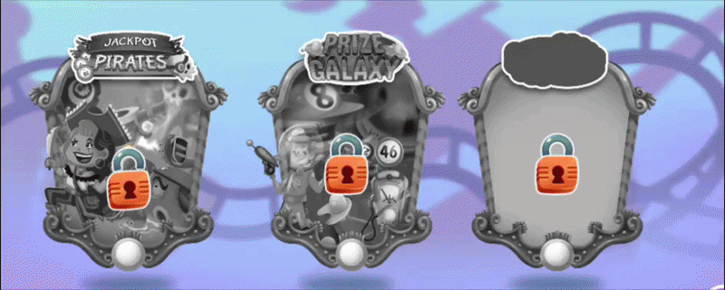
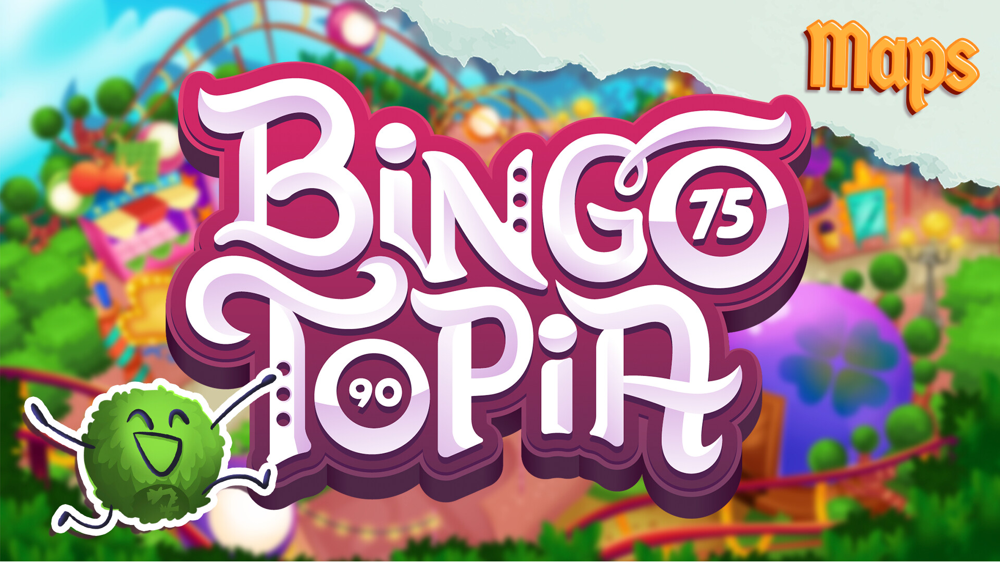
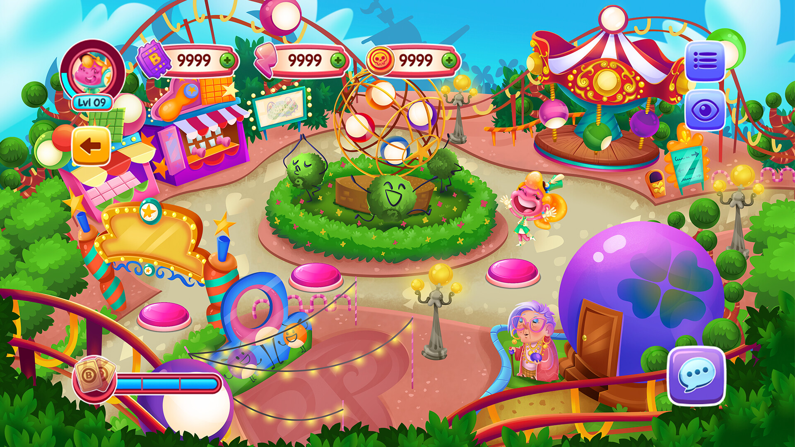
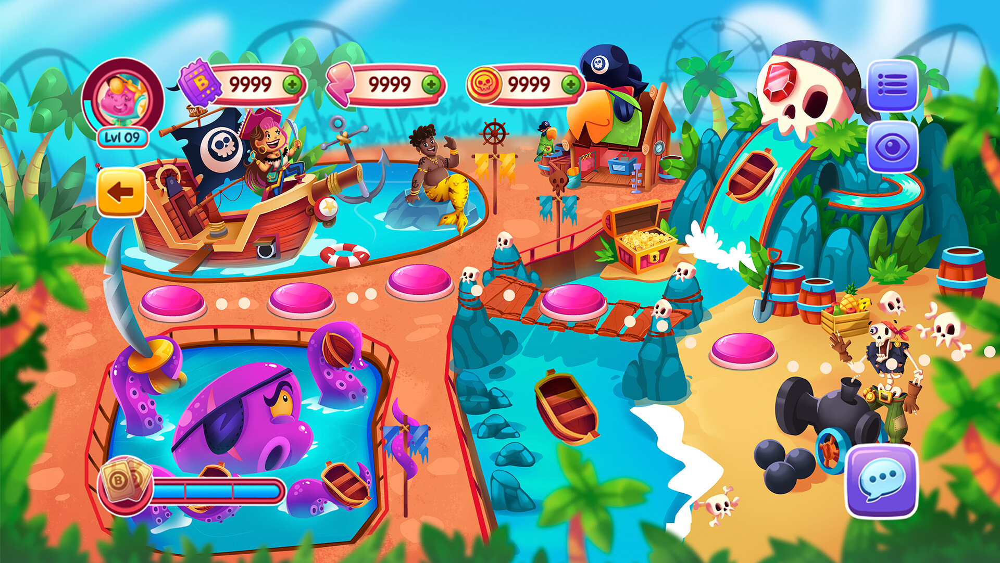
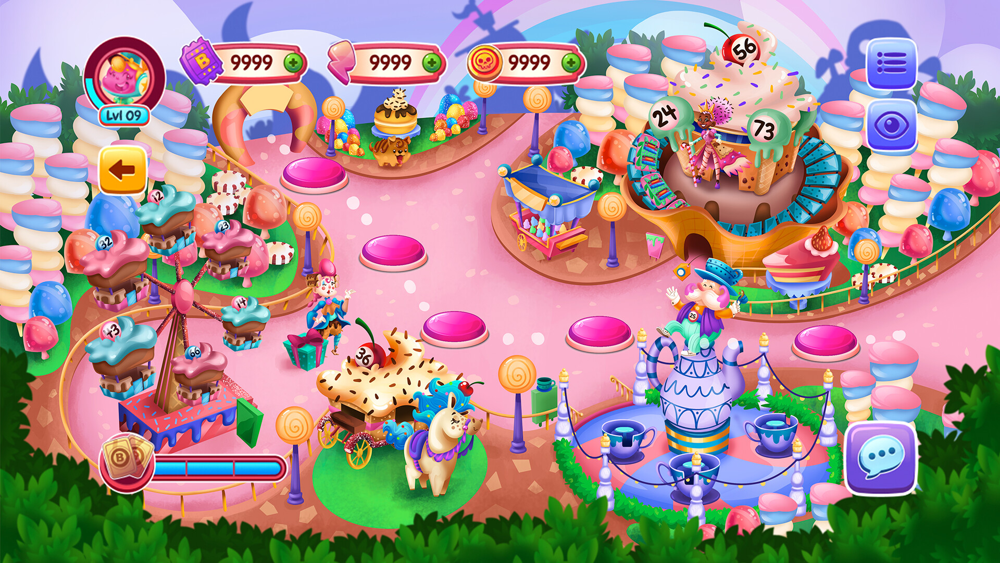
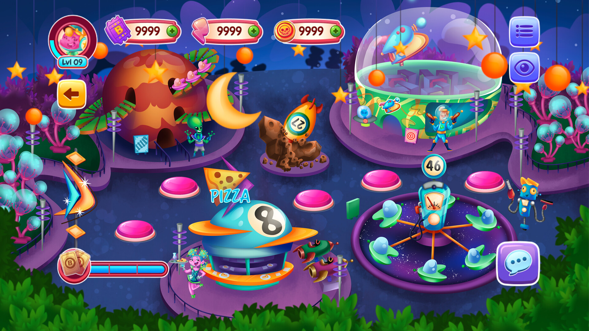

Minha participação
Participei do desenvolvimento do jogo como Unity Engineer, atuando diretamente na construção dos mapas, progressão de fases e na gameplay principal de bingo. Durante o projeto, construí um framework interno chamado BingoMaker, utilizado posteriormente em diversos outros projetos como base de código.
Plataformas
iOS, Android
Screenshots do Jogo





